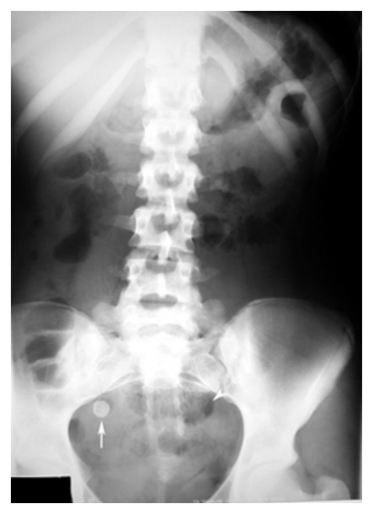
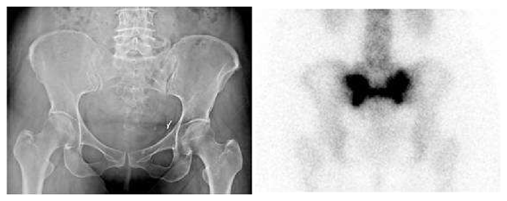
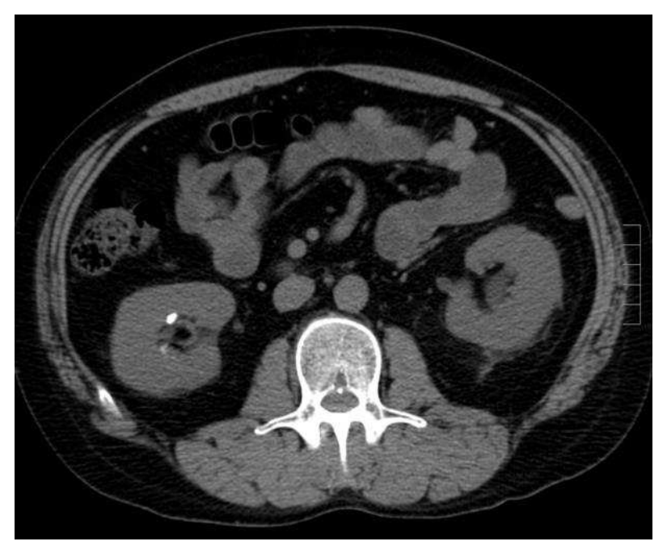
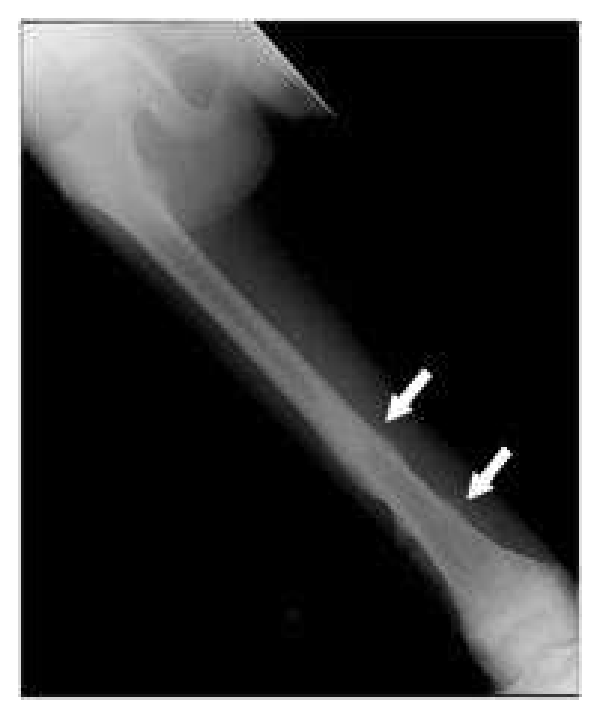

109 年第 1 次醫師醫學（五）（包括外科、骨科、泌尿科等科目及其相關臨床實例與醫學倫理）試題與答案
這一頁是民國 109 年第 1 次醫師醫學（五）（包括外科、骨科、泌尿科等科目及其相關臨床實例與醫學倫理）的整份歷屆試題，共 80 題，題目與標準答案出自考選部「國家考試試題及測驗式試題答案」開放資料。以下逐題列出題幹、選項與答案；要計時作答或記錄成績，請用線上練習。
考選部原始場次代碼：109020
線上作答這一科 →
全部 80 題
第 1 題
下列何者屬於Class II major histocompatibility complex（MHC）molecules？
- （A）HLA-A
- （B）HLA-B
- （C）HLA-C
- （D）HLA-DR
答案：（D）
第 2 題
手術部位感染（surgical site infection）與手術時傷口分級息息相關。當病患無其他內科史或合併症，且手術傷口屬於第四級，其手術傷口應如何處置才正確？
- （A）直接縫合
- （B）大量食鹽水清洗傷口後，直接縫合
- （C）給與局部抗生素後，直接縫合
- （D）採延遲縫合或二度縫合（delayed closure or secondary intention closure）
答案：（D）
第 3 題
下列敘述，何者正確？
- （A）抗生素可以預防尿路感染（urinary tract infection）
- （B）抗生素可以預防中央靜脈導管（central venous catheter）相關的血流感染
- （C）手術前避免在遠離手術部位之處發生感染，可以防止發生手術部位感染（surgical site infections）
- （D）營養不良的病人若在營養風險篩檢時營養不良分數（nutritional risk screening maluntrition score）得到5分，在手術前不需要矯正
答案：（C）
第 4 題
對於腹內壓增加所造成的生理反應，下列何者錯誤？
- （A）腎臟血流減少
- （B）中央靜脈壓力減少
- （C）心跳增加
- （D）肋膜內（intrapleural）壓力增加
答案：（B）
第 5 題
對於腹腔腔室症候群（abdominal compartment syndrome）的敘述，下列何者錯誤？
- （A）腹腔腔室症候群通常發生在多重創傷和加護病房的病患
- （B）放置鼻胃管是間接測量腹內壓的主要方法
- （C）正常的腹內壓大概是5 mmHg，壓力大於12 mmHg會造成呼吸困難，壓力到達25 mmHg會造成下腔靜脈（inferior vena cava）和門靜脈（portal vein）的壓迫
- （D）決定是否開刀的因素除了腹內高壓以外，和腹內高壓相關的器官衰竭也是重要考慮因素
答案：（B）
第 6 題
下列何種減重手術術式不是單純的restrictive type surgery？
- （A）可調式胃束帶手術（adjustable gastric banding（AGB））
- （B）縱式胃隔間術（vertical banded gastroplasty（VBG））
- （C）袖狀胃切除術（sleeve gastrectomy（SG））
- （D）膽胰繞道併十二指腸反轉（biliopancreatic diversion（BPD）with duodenal switch（DS））
答案：（D）
第 7 題
30歲少婦，婚後6年來並無節育計畫，但未曾懷孕，月經時有時無，突然出現頭痛、視力模糊且看東西有黑影，身體檢查發現眼球活動正常，但視野有兩顳側半盲，根據上述發現最有可能的診斷為何？
- （A）顱咽瘤（craniopharyngioma）
- （B）腦下垂體腦瘤出血（pituitary apoplexy）
- （C）矢狀竇旁腦膜瘤（parasagittal meningioma）
- （D）聽神經瘤（acoustic neuroma）
答案：（B）
第 8 題
腰椎椎間盤突出，90%發生在那個地方？
- （A）L1-2 and L2-3
- （B）L2-3 and L3-4
- （C）L3-4 and L4-5
- （D）L4-5 and L5-S1
答案：（D）
第 9 題
脊椎轉移性腫瘤中最常轉移的位置為：
- （A）頸椎
- （B）胸椎
- （C）腰椎
- （D）薦椎
答案：（B）
第 10 題
下列何者不是常見的intradural extramedullary spinal tumor的種類？
- （A）meningioma
- （B）schwannoma
- （C）neurofibroma
- （D）anaplastic astrocytoma
答案：（D）
第 11 題
下列何種處置不建議用來降低腦壓（intracranial pressure）？
- （A）頭抬高30度
- （B）過度換氣（hyperventilation）使二氧化碳分壓（PaCO2）降低到20 mmHg
- （C）低溫（hypothermia）治療
- （D）腦室引流腦脊髓液（ventricular CSF drainage）
答案：（B）
第 12 題
下列有關skin graft之敘述，何者錯誤？
- （A）skin graft的存活需要經過plasmatic circulation、organization and revascularization
- （B）最常見手術失敗的原因是hematoma or seroma accumulation、infection and movement
- （C）graft dermis越厚愈會contracture
- （D）plasmatic circulation是指在術後48小時內graft直接吸收養分
答案：（C）
第 13 題
關於化學性灼傷（chemical burn），下列敘述何者錯誤？
- （A）所有的化學性灼傷都應該立即除去患處衣物並大量沖水
- （B）嚴重酸性化學灼傷若引起血中酸鹼值異常及呼吸困難，可能需要氣管內插管及使用呼吸機（ventilator）協助呼吸
- （C）氫氟酸（hydrofluoric acid）灼傷應立即以2.5%葡萄糖酸鈣凝膠（calcium gluconate gel）局部患處治療
- （D）水泥灼傷是酸性化學灼傷
本題送分，無標準答案
第 14 題
de Quervain disease為那一個手腕背側伸肌腱腔室的狹窄性腱鞘炎？
- （A）第一個
- （B）第二個
- （C）第三個
- （D）第五個
答案：（A）
第 15 題
一位小朋友左眼遭棒球擊中，眼眶部位立即腫大，結膜下出血，左眼球無法向上移動，下列敘述何者錯誤？
- （A）小朋友可能有眼眶下緣骨折（infra-orbital rim fracture）
- （B）小朋友可能有眼眶底部骨折（orbital floor fracture）
- （C）左眼球無法向上移動是因為上直肌卡在眼眶底部骨折
- （D）小朋友需要接受眼眶電腦斷層檢查（orbital CT）
答案：（C）
第 16 題
25歲男性病人因騎機車車禍而顏面部受傷，主要症狀為右側鼻翼撕裂傷（avulsion injury）、流鼻血（epistaxis）和腫痛，送至急診室，下列敘述何者錯誤？
- （A）要高度懷疑可能有鼻骨骨折的發生，可安排X-ray檢查
- （B）經會診耳鼻喉科醫師，發現右側鼻中膈有血腫情形（septal hematoma），應保守治療，待其自行吸收
- （C）鼻部主要組成可分為皮膚覆蓋（skin cover）、結構支撐（structural support）及黏膜內襯（mucosallining），治療時可以根據缺損的範圍，做不同的重建考量
- （D）鼻唇皮瓣（nasolabial flaps）和前額旁正中皮瓣（paramedian forehead flaps）為鼻部重建時，最常用的兩種局部皮瓣
答案：（B）
第 17 題
有關顯微手術的目的，下列敘述何者錯誤？
- （A）為了轉移遠處的組織（distant tissue）到組織缺損的部位來做重建
- （B）為了修補血管之傷害或缺損（vascular injury or vascular defects）
- （C）可修補周圍神經（peripheral nerves）
- （D）顯微手術通常是用來修補小面積的組織缺損
答案：（D）
第 18 題
在先天性心臟病的完全矯正，有時需使用帶有瓣膜的同種異體移植物（homograft of pulmonary artery or aorta,valved）來銜接右心室至肺動脈，下列那些先天性心臟病之完全矯正可能需要用到此移植物？ ①動脈幹症（truncus arteriosus） ②肺靜脈回流完全異常 ③肺動脈瓣閉鎖合併心室中隔缺損 ④主動脈窄縮症
- （A）①②
- （B）①③
- （C）②③
- （D）①④
答案：（B）
第 19 題
一位 60歲男性病人因急性心肌梗塞住院。一星期後，病人突然呼吸較喘，流冷汗；身體檢查顯示胸骨左側有新的心縮期雜音、血壓 65/50毫米汞柱（mmHg）、肺動脈壓 60/40毫米汞柱、中心靜脈壓（CVP）30毫米汞柱，但意識清楚。下列敘述何者錯誤？①診斷為心室中隔破裂 ②不須裝置主動脈內氣球幫浦 ③須緊急手術，但若病人書面拒絕手術，則不可強行手術 ④若病人意識不清楚，也聯絡不到家屬，經初步治療略有改善，則不可立即手術
- （A）①②③
- （B）僅①③
- （C）②④
- （D）僅②
答案：（D）
第 20 題
一個無先天異常或後天重大肺感染疾病的患者，接受肺葉切除手術後，其術後肺功能將受到一定程度的損傷，在無特殊其他肺疾病的情形下，下列那個肺葉切除後對其術後肺功能的影響最小？
- （A）右肺上葉
- （B）右肺中葉
- （C）左肺上葉
- （D）左肺下葉
答案：（B）
第 21 題
對於食道破裂（esophageal perforation）的敘述，下列何者錯誤？
- （A）食道破裂超過一天才被診斷，死亡率常超過50%
- （B）患者頸部及胸部常有皮下氣腫（subcutaneous emphysema）的情形
- （C）手術治療食道破裂是非必要的
- （D）患者常合併膿胸和急性縱膈腔炎
答案：（C）
第 22 題
下列有關肝細胞癌（hepatocellular carcinoma）之敘述，何者錯誤？
- （A）肝細胞癌是最常見的原發性肝惡性腫瘤，好發於東南亞與非洲
- （B）肝細胞癌好發於男性，男女比約2 : 1～8 : 1
- （C）約有10%肝細胞癌會產生伴腫瘤症候群（paraneoplastic syndrome）， 如高血鈣、低血糖與紅血球增生症
- （D）目前已知的治療方式至少包括手術、射頻燒灼（radiofrequency ablation）、酒精注射、經動脈栓塞與標靶治療
答案：（C）
第 23 題
幽門螺旋桿菌（Helicobacter pylori）感染是產生胃癌最重要的危險因子。在1994年被國際癌症研究署（IARC）歸類為：
- （A）第一類致癌物質（group I carcinogen）
- （B）第二類致癌物質（group II carcinogen）
- （C）第三類致癌物質（group III carcinogen）
- （D）第四類致癌物質（group IV carcinogen）
答案：（A）
第 24 題
病房有一因胃癌接受次全胃切除及Billroth-II reconstruction的病人，開始進食後，抱怨進食20～30分鐘後會有噁心 （nausea）、心悸（palpitation）、冒汗及腹瀉等症狀，檢查生命跡象後發覺有心搏過速（tachycardia）的情形，最有可能的診斷為何？
- （A）輸入環症候群（afferent loop syndrome）
- （B）輸出環症候群（efferent loop syndrome）
- （C）傾倒症候群（dumping syndrome）
- （D）急躁性腸道症候群（irritable bowel syndrome）
答案：（C）
第 25 題
吳太太於例行性胃內視鏡健康檢查時發現有1公分大小的胃息肉，下列何者需進行息肉切除？
- （A）切片病理報告為增生性息肉（hyperplastic polyp）
- （B）切片病理報告為腺瘤（adenomatous polyp）
- （C）切片病理報告為缺陷瘤（hamartoma）
- （D）切片病理報告為異位瘤（heterotopic polyp）
答案：（B）
第 26 題
診斷胃癌最好的方法為何？
- （A）內視鏡
- （B）腹部超音波
- （C）腹部電腦斷層
- （D）上消化道攝影
答案：（A）
第 27 題
有關消化性潰瘍手術的適應症，下列何者錯誤？
- （A）藥物治療無效
- （B）潰瘍出血併出血性休克
- （C）幽門螺旋桿菌（Helicobacter pylori）感染
- （D）穿孔
答案：（C）
第 28 題
關於胰島素瘤（insulinoma）之敘述，下列何者錯誤？
- （A）是最常見的胰臟內分泌腫瘤
- （B）大多為惡性的胰臟內分泌腫瘤
- （C）診斷insulinoma重要的臨床症狀是Whipple's triad，包括低血糖的症狀、當時測得的血糖濃度偏低，及給予靜脈注射葡萄糖液可以減輕低血糖的症狀
- （D）定位insulinoma的影像學工具包括有腹部電腦斷層及磁振造影
答案：（B）
第 29 題
對於急性胰臟炎（acute pancreatitis）的可能併發症（complications），下列敘述何者錯誤?
- （A）低血容合併急性腎衰竭（hypovolemia with acute renal failure）
- （B）低血氧合併成人呼吸窘迫症（hypoxemia with adult respiratory distress syndrome）
- （C）高鈣血症合併抽搐（hypercalcemia with seizure）
- （D）血管栓塞合併小腸缺血症（vascular thrombosis with ischemic bowel disease）
答案：（C）
第 30 題
有關膽囊結石之敘述，何者錯誤？
- （A）長期禁食或使用全靜脈營養治療之病患與膽囊結石之形成有相關性
- （B）膽囊結石可分為色素結石與膽固醇結石兩大類
- （C）膽囊結石的併發症包括急性膽囊炎、膽石性胰臟炎、腸阻塞
- （D）膽石性急性膽囊炎採取以腹腔鏡膽囊切除手術治療為絕對禁忌症
答案：（D）
第 31 題
分化良好甲狀腺癌的手術選擇中，有關甲狀腺全切除術，下列敘述何者錯誤？
- （A）能減少副甲狀腺功能低下及喉返神經受傷等併發症
- （B）手術後可用甲狀腺球蛋白做為標記追蹤
- （C）可增加手術後碘-131（iodine-131）治療效果
- （D）需終生服用甲狀腺素
答案：（A）
第 32 題
甲狀腺風暴（thyroid storm）不宜給與何種治療？
- （A）beta抑制劑（beta blockers）
- （B）amiodarone
- （C）腎上腺皮質素（corticosteroids）
- （D）propylthiouracil
答案：（B）
第 33 題
下列甲狀腺結節（thyroid nodule）的檢查，應不優先考慮何者？
- （A）超音波及細針穿刺細胞檢查
- （B）胸骨下甲狀腺瘤作CT或 MRI
- （C）正子攝影檢查
- （D）甲狀腺核醫掃描（scanning）用於濾泡瘤且甲狀腺刺激素（TSH）低者
答案：（C）
第 34 題
下列何者是乳癌病理組織報告中，做為判斷輔助性化學治療（chemotherapy）的必要因子？①腫瘤大小 ②淋巴轉移 ③位置 ④荷爾蒙接受器陽陰性
- （A）①②③
- （B）①③④
- （C）①②④
- （D）②③④
答案：（C）
第 35 題
婦人在乳房摸到一腫塊，下列敘述何者錯誤？
- （A）皮膚凹陷（skin dimpling）較腫瘤硬度對乳癌的陽性預測值高
- （B）若無皮膚凹陷（skin dimpling），即可排除乳癌可能
- （C）若腋下摸到淋巴結則乳癌可能性增高
- （D）皮膚凹陷（skin dimpling）的發生與Cooper’s ligament有關
答案：（B）
第 36 題
腋下淋巴結廓清時，若遭切斷，會造成上臂內側麻木或疼痛的神經為何？
- （A）long thoracic nerve
- （B）thoracodorsal nerve
- （C）intercostobrachial nerve
- （D）medial pectoral nerve
答案：（C）
第 37 題
45歲女性，乳房摸到腫塊，下列處置何者較恰當？
- （A）理學檢查若正常，不需其他檢查，安排半年再追蹤
- （B）不需其他檢查，即刻安排手術切除切片
- （C）先安排乳房超音波檢查
- （D）抽血檢驗CA15-3
答案：（C）
第 38 題
一名剛出生的男嬰，其腹部 X光的影像顯示有double-bubble sign，最可能的診斷為何？
- （A）幽門狹窄（pyloric stenosis）
- （B）十二指腸閉鎖（duodenal atresia）
- （C）小腸閉鎖（intestinal atresia）
- （D）肛門閉鎖（imperforate anus）
答案：（B）
第 39 題
新生兒出生後數小時被發現吐出泡沫唾液且上腹部有微脹的現象，下列何項診斷最有可能？
- （A）十二指腸閉鎖（duodenal atresia）
- （B）食道閉鎖合併遠端氣管食道瘻管（esophageal atresia with distal tracheoesophageal fistula）
- （C）中腸扭結（midgut volvulus）
- （D）橫膈膜疝氣（diaphragmatic hernia）
答案：（B）
第 40 題
新生兒畸胎瘤 (teratoma) 最好發的部位在下列何處?
- （A）睪丸（testis）
- （B）卵巢（ovary）
- （C）縱隔腔部（mediastinal region）
- （D）薦尾椎部（sacrococcygeal region）
答案：（D）
第 41 題
關於兒童腸套疊（intussusception）的敘述，下列何者錯誤？
- （A）好發的年齡為三個月到兩歲
- （B）大多數病人都需要手術治療
- （C）好發部位在迴腸盲腸部（ileocecal region）
- （D）若診斷時已有腹膜炎的現象，則以手術治療較為恰當
答案：（B）
第 42 題
有關早產兒壞死性腸炎（necrotizing enterocolitis），下列的處置方式何者錯誤？
- （A）馬上禁食且行口胃管（orogastric tube）減壓
- （B）需使用廣效性抗生素
- （C）所有病患均需接受手術治療
- （D）需補充水分及電解質
答案：（C）
第 43 題
下列關於發炎性腸疾（inflammatory bowel disease）的敘述，何者錯誤？
- （A）相較於北歐及美國，亞洲地區的發生率較高
- （B）潰瘍性結腸炎（ulcerative colitis）的發炎浸潤多在黏膜層及黏膜下層，持續發炎的結果會造成纖維化；在長期持續發炎的病例，黏膜也可能發生惡性病變
- （C）克隆氏症（Crohn’s disease）為一慢性、全壁式（ transmural ）的發炎性疾病，可侵犯由口至肛門的任何部位
- （D）發炎性腸疾患者還可以併發其他的病症，主要包括虹膜炎、鞏膜炎、關節炎、皮膚病變、膽管及膽管周圍炎等
答案：（A）
第 44 題
24歲男子噁心及肚臍周圍不適隨後感到右下腹痛而至急診求診，腹部X-ray如圖所示，下列何者為較可能的診斷？

- （A）急性膽囊炎
- （B）急性闌尾炎
- （C）乙狀結腸憩室炎
- （D）消化性潰瘍
答案：（B）
第 45 題
直腸癌接受 total mesorectal excision 之治療不會有下列那一項結果？
- （A）性無能的發生機率會增高
- （B）病患長期預後較佳
- （C）局部復發率會減少
- （D）膀胱功能異常會減少
答案：（A）
第 46 題
下列關於intramedullary spinal cord tumor的敘述，何者錯誤？
- （A）intramedullary spinal cord tumor約占所有spinal tumor的5%
- （B）primary intramedullary spinal cord lymphoma相當罕見
- （C）最常見的intramedullary spinal cord tumor為轉移性腫瘤
- （D）黏液乳突狀室管膜瘤（myxopapillary ependymoma）較常長在腰椎處
答案：（C）
第 47 題
下列病人何者不適合做心臟移植？
- （A）嚴重且反覆的心臟衰竭症狀，且左心室射出率（ejection fraction, LVEF）<20%
- （B）嚴重心肌缺血無法以傳統冠狀動脈繞道手術治療者
- （C）心臟衰竭已使用葉克膜（ECMO）等心臟輔助器，且無法斷離者
- （D）複雜的先天性心臟病，可以用傳統手術矯正者
答案：（D）
第 48 題
下列那一個構造不是triangle of Calot的邊界？
- （A）右肝下緣
- （B）總肝管（common hepatic duct）
- （C）膽囊管（cystic duct）
- （D）右門靜脈（right portal vein）
答案：（D）
第 49 題
一位洗腎病人血液中的鉀離子6.2 mmol/L，心電圖中會觀察到下列何種現象？
- （A）tall T-waves
- （B）depressed T-waves and U-waves
- （C）ST-T elevation
- （D）QRS shortening
答案：（A）
第 50 題
承上題，對於急性高鉀血症的處置，下列何者效果最慢？
- （A）靜脈注射50 mL的D50W和10 units的短效胰島素（regular insulin），並嚴密監測血糖
- （B）靜脈注射10 mL的10%氯化鈣（calcium chloride）或是10 mL的10%葡萄糖酸鈣（calcium gluconate）
- （C）靜脈注射50～100 mEq的碳酸氫鈉（sodium bicarbonate）
- （D）給與腸胃道的potassium-binding resins
答案：（D）
第 51 題
一個4個月大的女嬰，母親是高齡產婦，女嬰出生時並無發紺現象，出生體重2500 gm，一個月後嬰兒呈現呼吸急促，食慾不佳，有盜汗現象，經醫師檢查，呼吸及心跳速率皆增加，胸骨左側可聽到心縮期雜音，肝臟也有腫大現象。心臟超音波檢查發現有左至右的分流，肺動脈壓增高，經投予藥物治療數星期之後，臨床症狀改善有限，且體重只有3500 gm，醫師建議手術治療。請依此回答下列3題：下列那些手術方式對此病患有幫助？①Blalock-Taussig分流手術 ②完全矯正（total correction） ③肺動脈環縮術（PA banding） ④肺動脈瓣切開術
- （A）①②
- （B）②③
- （C）①④
- （D）①③
答案：（B）
第 52 題
若病人沒有接受手術。數年之後，病人呈發紺現象，經超音波檢查發現有右至左的分流現象，會造成此現象主要的原因為何？
- （A）肺動脈血管壁硬化，使肺動脈血管阻力增加
- （B）心室中隔缺損變小，肺動脈血流減少
- （C）肺靜脈血管開口變狹窄，使肺動脈血管阻力增加
- （D）三尖瓣逆流，使肺動脈血流減少
答案：（A）
第 53 題
病人父母問目前若無接受手術治療，未來可能須進行何種手術治療？
- （A）心室中隔缺損擴大術
- （B）心肺移植術
- （C）三尖瓣置換術
- （D）肺靜脈血管氣球擴張術
答案：（B）
第 54 題
關於胸腔出口症候群（thoracic outlet syndrome）的敘述，下列何者錯誤？
- （A）多由鎖骨下血管或此區臂神經叢受壓迫而引起
- （B）症狀多由神經壓迫引起
- （C）中年男性病患較多
- （D）治療可先採保守非手術方法
答案：（C）
第 55 題
承上題，下列何者不是檢查胸腔出口症候群的方法？
- （A）Adson（scalene）test
- （B）Halsted（costoclavicular） test
- （C）Wright（hyperabduction）test
- （D）Breath test
答案：（D）
第 56 題
有關骨生成（bone-forming）腫瘤之敘述，下列何者最正確？
- （A）診斷骨肉瘤（osteosarcoma）時，有部分病患同時會被診斷出肺轉移
- （B）骨軟骨瘤（osteochondroma）因有惡性變化的可能，故均須接受手術切除
- （C）骨母細胞瘤（osteoblastoma）引起的疼痛可藉藥物緩解，因此不須手術
- （D）骨樣骨瘤（osteoid osteoma）好發於關節及長骨骨骺（epiphysis）
答案：（A）
第 57 題
一位36歲男性，在車禍中造成頸部疼痛及雙側四肢無力、感覺異常，電腦斷層影像檢查之軸向影像（axialimages）顯示在第六、七頸椎處出現雙腔影像（double-lumen sign）。依照此檢查結果，下列何者是第六、七頸椎的最適當診斷？
- （A）壓迫性骨折（compression fracture）
- （B）爆裂性骨折（burst fracture）
- （C）小面關節骨折（facet fracture）
- （D）脫位（dislocation）
答案：（D）
第 58 題
20歲的張同學騎機車時，正面撞擊停在路邊的車子，結果右膝撞擊機車的前檔板。當天該膝關節並未明顯腫脹，急診室拍的X光片也顯示沒有骨折；雖然膝關節活動有些疼痛，但是大致上還能行走。一個月後，右膝已經幾乎不再疼痛，不過他發現走路時右膝有時會有瞬間無法支撐體重、忽然軟弱無力的感覺；尤其走下樓梯時最為困擾，他很害怕會從樓梯上滾下來。張同學最有可能發生了：
- （A）前十字韌帶（anterior cruciate ligament）斷裂
- （B）後十字韌帶（posterior cruciate ligament）斷裂
- （C）髕骨半脫位（patellar subluxation）
- （D）內側副韌帶（medial collateral ligament）斷裂
答案：（B）
第 59 題
橈骨近端（proximal radius）靠近肘關節附近，例如橈骨頸發生骨折時，最可能合併那一條神經的傷害？
- （A）前骨間神經（anterior interosseous nerve）
- （B）後骨間神經（posterior interosseous nerve）
- （C）尺神經（ulnar nerve）
- （D）淺橈神經（superficial radial nerve）
答案：（B）
第 60 題
一位55歲的女性，有肺癌病史。兩天前突然發生背痛，但生命跡象穩定，大小便功能及四肢神經功能正常。脊椎X光及磁振造影檢查結果疑似第二腰椎轉移性腫瘤，但無明顯神經壓迫。下列敘述何者錯誤？
- （A）可以安排骨骼同位素掃描（bone scan）檢查，幫忙診斷是否有其他骨骼部位的轉移
- （B）可以安排電腦斷層導引活體組織切片檢查（CT-guided biopsy），幫忙確定是否為腫瘤轉移
- （C）若確定是轉移性腫瘤，應建議患者馬上接受脊椎固定、椎板切除神經減壓手術，來治療其背痛及預防神經壓迫受損
- （D）轉移性脊椎腫瘤的手術目的，主要是改善患者疼痛及生活品質，對其原發腫瘤的病情控制及存活時間，並無太大直接影響
答案：（C）
第 61 題
一位30歲男性搭乘計程車前座，發生車禍後送至急診，身體檢查時左下肢呈現肢體變短，左髖關節屈曲、內收及內旋轉的外觀，最有可能之初步診斷為何？
- （A）髖關節前位脫臼
- （B）髖關節後位脫臼
- （C）股骨頸骨折
- （D）股骨轉子間骨折
答案：（B）
第 62 題
根據Catterall的研究認為，兒童的股骨頭部缺血性壞死症（Legg- Calvé -Perthes disease）預後不好的徵象中，下列何者除外？
- （A）在股骨頭部的外側X光通過性增加（radiolucency in lateral femoral head）
- （B）股骨頭部的生長板呈水平向（horizontal growth plate）
- （C）發病時的年紀較輕（小於5歲）
- （D）股骨頭部的壞死範圍達80%
答案：（C）
第 63 題
有關痛風（gout）的敘述，下列何者正確？
- （A）在急性發作時，血清中尿酸（uric acid）值一定增高
- （B）急性發作時，使用非類固醇消炎藥（NSAIDs）或秋水仙素（colchicine）治療
- （C）長期高尿酸血症的患者，常可見到半月軟骨（meniscus）發生軟骨鈣質沉著病（chondrocalcinosis）
- （D）偏光顯微鏡（polarized light microscope）檢查關節液，可見到陽性雙折射（positively birefringent）特性的針狀結晶體
答案：（B）
第 64 題
形成含鈣腎結石（calcium nephrolithiasis）最常見的原因有那些？①尿中鈣離子濃度增加 ②尿中尿酸濃度上升 ③尿中草酸鹽（oxalate）濃度上升 ④尿中檸檬酸鹽（citrate）濃度上升
- （A）①②③
- （B）①②④
- （C）②③④
- （D）①③④
答案：（A）
第 65 題
下列有關腎上腺腫瘤之敘述，何者錯誤？
- （A）具有功能或大於五公分之腎上腺腫瘤均應手術切除
- （B）利用腹腔鏡方式切除是目前較好的處理方法，術後疼痛少且恢復迅速
- （C）目前腎上腺腫瘤大部份是因其他原因實施影像檢查時意外發現
- （D）腎上腺腫瘤經檢查如果發現其不具功能，就不需手術切除
答案：（D）
第 66 題
有關睪丸腫瘤之敘述，下列何者錯誤？
- （A）睪丸惡性腫瘤最常見者為germ cell tumor
- （B）續發性睪丸惡性腫瘤最常見為lymphoma
- （C）α-胎兒蛋白（AFP）於pure seminoma不會升高
- （D）早期seminoma之治療以化療為主
答案：（D）
第 67 題
最常轉移到膀胱之癌症為：
- （A）黑色素瘤
- （B）淋巴瘤
- （C）胃癌
- （D）乳癌
答案：（A）
第 68 題
下列何者不會造成flaccid neuropathic bladder？
- （A）S2-S4 spinal cord受傷
- （B）頸椎受傷（cervical spine injury）且有quadriplegia
- （C）Myelodysplasia造成anterior horn cell無法正常發育
- （D）Poliovirus感染並破壞anterior horn cell of spinal cord
答案：（B）
第 69 題
有關間質性膀胱炎（interstitial cystitis）之敘述，下列何者錯誤？
- （A）通常發生於40歲以上的女性
- （B）通常病人的尿液常規檢查會出現血尿及膿尿
- （C）常見的症狀是頻尿、夜尿、急尿、及恥骨上疼痛
- （D）症狀通常是在膀胱脹尿時引起，因此膀胱容積逐漸縮小，病人變得相當頻尿
答案：（B）
第 70 題
有關反覆性尿路感染的敘述，下列何者正確？
- （A）反覆性尿路感染的女孩，一定會有尿路系統解剖學上的異常
- （B）反覆性尿路感染的女孩，常會有憋尿、少喝水的習慣以及便秘
- （C）如果沒有發燒症狀，尿路感染並不需要治療
- （D）膀胱輸尿管尿液逆流，並不是造成反覆性尿路感染的原因
答案：（B）
第 71 題
一位50歲男性前列腺癌病人接受前列腺根除手術，術後無法勃起，最可能受損的神經是：
- （A）骨盆腔神經叢（pelvic plexus）
- （B）海綿體神經（cavernous nerve）
- （C）陰部神經（pudendal nerve）
- （D）腹下神經（hypogastric nerve）
答案：（B）
第 72 題
58歲女性已切除子宮及卵巢，另患有骨盆腔惡性肉瘤，並接受手術及放射治療，主訴最近下背痛，X光及核醫骨掃描如附圖，最可能的診斷為何？

- （A）bone metastasis
- （B）insufficiency fracture
- （C）local tumor recurrence
- （D）degenerative spine disease
答案：（B）
第 73 題
33歲男性因陣發性腹痛而求醫，患者體溫正常、生命徵象穩定，患者接受對比劑注射前（pre-contrast）的電腦斷層掃描檢查如圖，下列診斷何者最恰當？

- （A）急性盲腸炎
- （B）腸胃炎
- （C）腎結石
- （D）膽囊炎
答案：（C）
第 74 題
13歲男國中生最近覺得右腳膝蓋附近偶爾隱隱作痛，且疼痛的時間越來越長，晚上睡覺時症狀也很明顯，附圖為下肢X光攝影，最可能的診斷為何？

- （A）fibrous dysplasia
- （B）aneurysmal bone cyst
- （C）osteogenic sarcoma
- （D）eosinophilic granuloma
答案：（C）
第 75 題
65歲男性看門診，主訴三天前大便有血絲，醫師做肛診檢查未發現有血跡，下列有關醫師的說法何者最適當？
- （A）下消化道出血比上消化道出血具有生命危險性
- （B）年紀大不是上消化道出血的危險因子
- （C）大多數急性消化道出血不會自動停止流血
- （D）下消化道出血可能來自空腸（jejunum）
答案：（D）
第 76 題
腹部受傷機轉不同，可能有不同器官傷害，且受傷頻率不一，路人甲發生車禍造成腹部鈍傷（blunt injury）和路人乙腹部遭受槍擊傷（gunshot injury）時，他們最常受傷的器官分別是：
- （A）鈍傷時為脾臟；槍擊傷時是肝臟
- （B）鈍傷時為肝臟；槍擊傷時是脾臟
- （C）鈍傷時為脾臟；槍擊傷時是小腸
- （D）鈍傷時為小腸；槍擊傷時是胰臟
答案：（C）
第 77 題
下列那一項檢查對腹部鈍傷最具特異性（specificity）？
- （A）腹部X光
- （B）腹部超音波
- （C）診斷性腹腔灌洗法
- （D）腹部電腦斷層掃描
答案：（D）
第 78 題
某醫院最近引進一家不同廠商的外科耗材，但在不到3個月便把這項耗材剔除，原因是醫院發現，該耗材用量異常增加，因為廠商私下付給使用該耗材的醫師每件500元。下列何者非為本案例中可能涉及的倫理議題？
- （A）損及醫病互信
- （B）違反病人隱私
- （C）造成醫療資源浪費
- （D）存有利益衝突
答案：（B）
第 79 題
簡先生是一位30歲的男性，曾經做過警衛，但目前是自由業。3年前因缺血性腸炎接受大量小腸切除，術後因為短腸症裝了希克曼氏導管長期接受全靜脈營養。對於日復一日照顧導管接點滴的工作及長年來無法正常進食感到非常厭煩。這次因為發燒，導管相關血液感染住院，最近幾天病患曾多次告訴照顧他的醫師，經過長時間的思考，他不想再活下去，他要停止目前的治療並拒絕繼續接受全靜脈營養。他說若不能正常由口進食，病患的生命就沒有任何意義，同時他已經與家人討論過這件事，他的家人雖然於心不忍，但卻似乎已經接受且同意他的想法；下列何種作法最不適當？
- （A）尊重簡先生的意願，不繼續給予全靜脈營養
- （B）會診精神科評估病人的心智並且探究原因
- （C）為避免病人死亡，不論如何需繼續治療
- （D）和病人討論各種治療之選項，尊重他的選擇
答案：（C）
第 80 題
34歲的葉小姐是位老師，身體健康無特殊病史，近日因為右側鼠蹊部腫脹來門診，經診斷為腹股溝疝氣，醫師向葉小姐建議進行疝氣修補術治療，在解釋病情及手術細節後，葉小姐卻要求術後要補充白蛋白，因為她聽說白蛋白對腹部手術術後恢復有幫助，但醫師的專業判斷認為並不需要，此情境下，如何處理較適當？
- （A）經過專業判斷不需要補充白蛋白，與病人多溝通後婉拒病人的要求，不給與術後白蛋白補充
- （B）答應病人補充白蛋白，且以健保支付
- （C）即使判斷補充白蛋白不是恰當的醫療處置，但是病人要求了，補充之也無傷大雅
- （D）補充白蛋白是醫療專業判斷，由醫師決定即可，不需再與病人溝通
答案：（A）
其他年度
回到醫師醫學（五）（包括外科、骨科、泌尿科等科目及其相關臨床實例與醫學倫理）的年度總覽，
或到醫師題庫首頁看其他科目。
題目與標準答案出自考選部「國家考試試題及測驗式試題答案」開放資料。依中華民國《著作權法》第 9 條第 1 項第 5 款，
依法令舉行之各類考試試題不得為著作權之標的，得自由利用。詳解為 AI 整理的學習輔助，
並非官方標準答案；中華民國法規會修訂，引用前請對照現行版本查證。